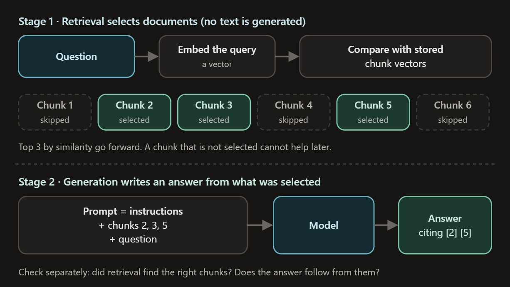
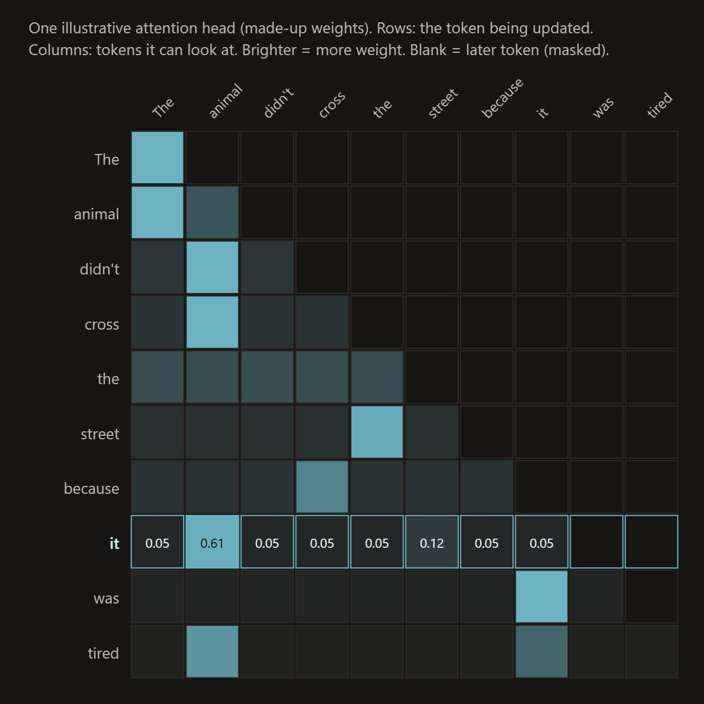
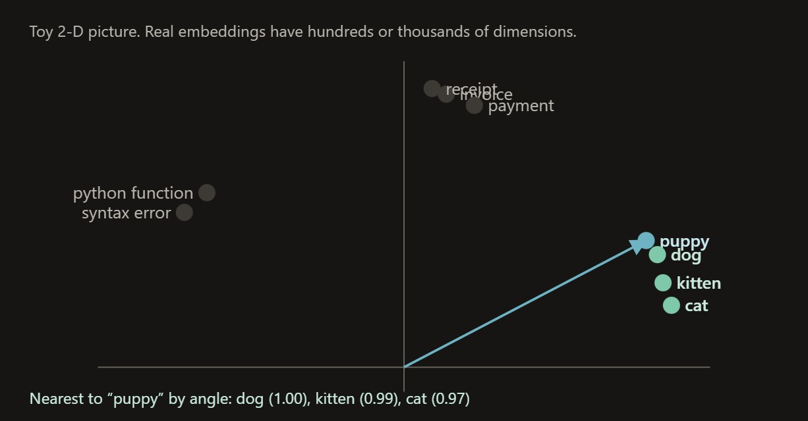
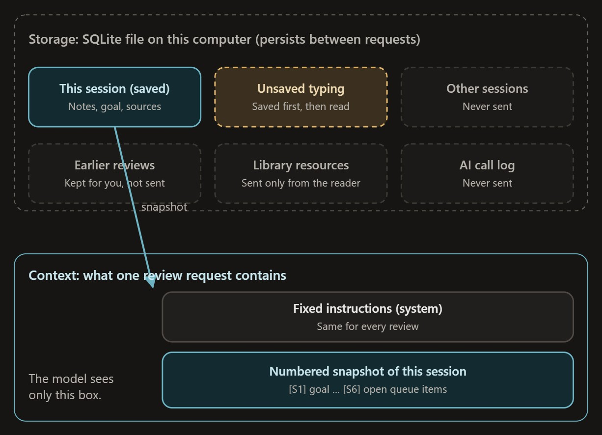
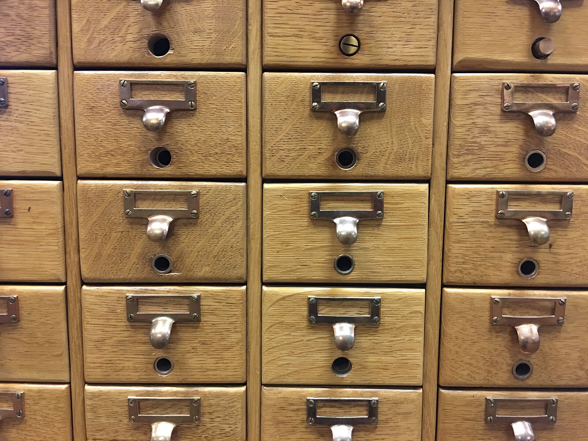
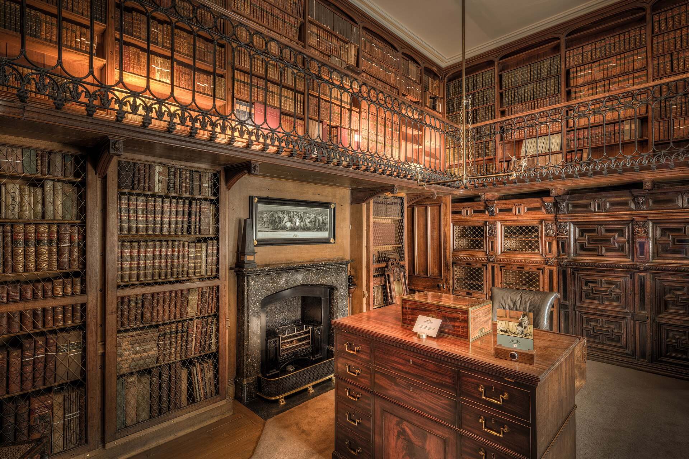
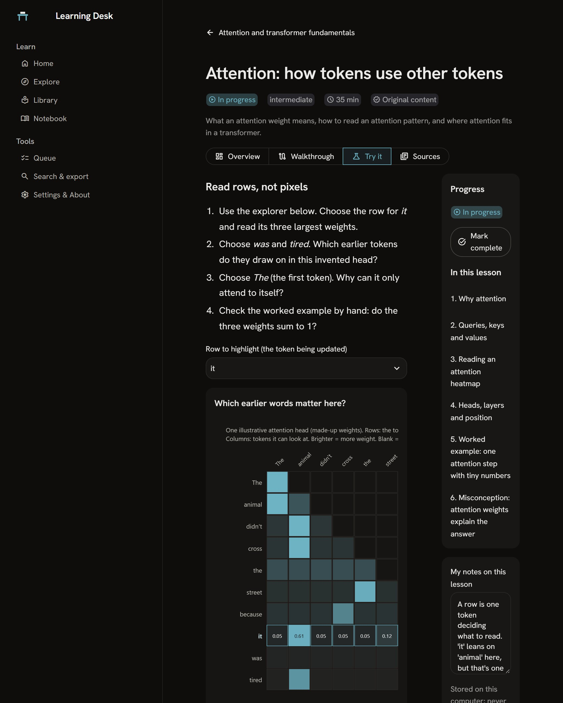

Study the ideas behind AI apps at your desk




A free app for your own computer: fourteen illustrated lessons on how AI apps work, with notes that never leave your machine.
Get the codeTen topics, fourteen lessons

Topics
- 1 lessonPython for AI applications3 planned
- 3 lessonsJSON, HTTP, APIs and authentication1 planned
- 2 lessonsTokens, context, training and inference1 planned
- 1 lessonProbability, generation and sampling2 planned
- 2 lessonsEmbeddings, similarity and retrieval1 planned
- 1 lessonAttention and transformer fundamentals2 planned
- 1 lessonInstructions and structured outputs1 planned
- 1 lessonTools and agent workflows1 planned
- 1 lessonEvaluation, datasets, graders and failure analysis2 planned
- 1 lessonAI product decisions1 planned
Planned lessons are shown as outlines and say so. Nothing unfinished is presented as a lesson.

Four ways into one lesson

Overview, Walkthrough, Try it and Sources are four views of the same text. The app keeps your view, your section and your notes, on your computer only.
Move the temperature
This is the sampling lesson’s own example. A model scores every possible next word; temperature decides how strongly the highest score wins. Drag it, then draw a word.
The eight scores are invented for teaching. The arithmetic is the lesson’s, and it runs in your browser: no model is called.
The experiment finished, so we wrote the
First, you press a button.
Reading, browsing and switching views send nothing. A model is called only when you ask for a summary, a quiz or a review.
Then one request leaves.
It carries the one saved lesson or note you chose, and nothing else from your desk. One attempt, no silent retries.
The reply is checked.
It must be valid JSON in the expected shape, and every citation must point at a passage that really exists.
Review failed. Your notes are unchanged. The model’s reply did not match the expected format, so it was not used.
Details: 1 validation error for Review …
learning_desk/ai.py and session_page.py; the details line is shortened.Or nothing is kept.
A failed or malformed reply is recorded with its reason, and your notes stay exactly as they were.
Every claim has a source
- Python’s own documentation
- RFC 8259
- JSON Schema
- MDN Web Docs
- OWASP
- Pydantic
- Anthropic’s API documentation
- Building Effective Agents
- Contextual Retrieval
- Attention Is All You Need
- Jointly Learning to Align and Translate
- Subword Units for Rare Words
- The Curious Case of Neural Text Degeneration
- Word Representations in Vector Space
- Retrieval-Augmented Generation
- ReAct
- Judging LLM-as-a-Judge
- and this app’s own code
Each link was opened, and the claim it supports compared with the page, on 23 October 2026. Every lesson shows its sources and that date.
Your desk is ready
Free and open source under the MIT licence. Clone the repository, then run python -m streamlit run app.py.